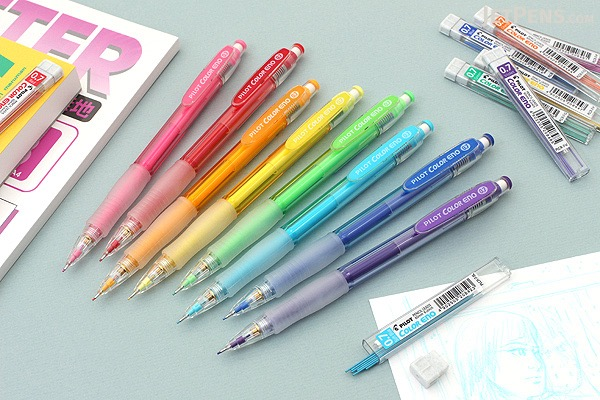
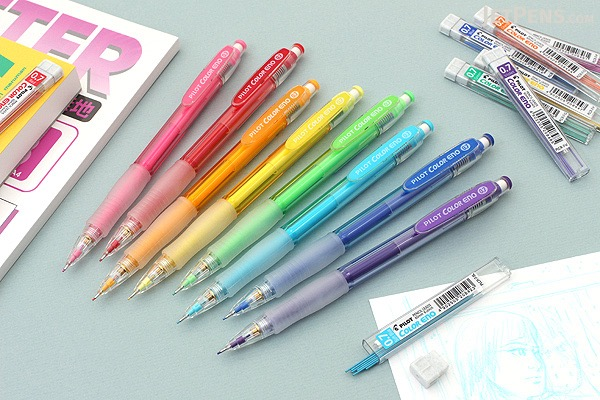
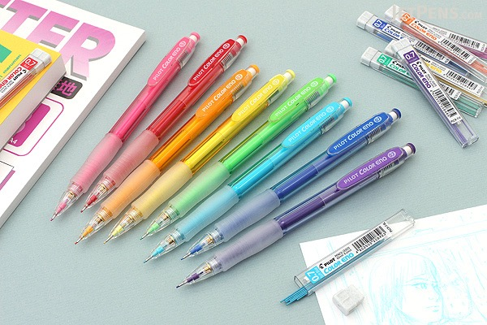

PILOT COLOR ENO MECHANICAL PENCIL-0.7mm
$2.2
☆ ☆ ☆ ☆ ☆

PILOT COLOR ENO MECHANICAL PENCIL-0.7mm
$2.2
☆ ☆ ☆ ☆ ☆
Using a mechanical pencil doesn't have to mean limiting yourself to plain gray lead! The Pilot Color Eno mechanical pencil is available in eight bright colors, each with matching colored lead. The colored leads are smudge-resistant and easy to erase—perfect for drawing and sketching!